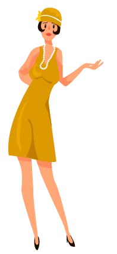

Todas as saídas da mansão estão fechadas, e você fica sem comunicação com os colegas do DP-I. -“Será que eles estão seguindo com o plano?!”, você se pergunta. Indecisa, o tempo está passando e você só tem 2 opções: O que você quer fazer, Joana?